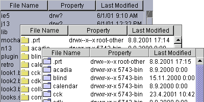

java.awt.Component
java.awt.Container
javax.swing.JComponent
javax.swing.JTable
cz.dhl.swing.JCoFileTable
java.awt.Component
java.awt.Container
javax.swing.JComponent
javax.swing.JTable
cz.dhl.swing.JCoFileTable
java.lang.Object
Swing Directory Selector Combo Box Component.

To listen for file selection making events:
fileList.getSelectionModel().addListSelectionListener(new ListSelectionListener()
{ public void valueChanged(ListSelectionEvent e)
{ myFileSelectHandler(); } } );
To listen for file selection entering (doubleclick) events:
fileList.addMouseListener(new MouseAdapter()
{ public void mouseClicked(MouseEvent e)
{ if(e.getClickCount()>1)
myFileEnterHandler(); } } );
File,
Serialized Form| Nested Class Summary |
| Nested classes inherited from class javax.swing.JTable |
javax.swing.JTable.AccessibleJTable |
| Nested classes inherited from class javax.swing.JComponent |
javax.swing.JComponent.AccessibleJComponent |
| Nested classes inherited from class java.awt.Container |
java.awt.Container.AccessibleAWTContainer |
| Nested classes inherited from class java.awt.Component |
java.awt.Component.AccessibleAWTComponent, java.awt.Component.BltBufferStrategy, java.awt.Component.FlipBufferStrategy |
| Field Summary |
| Fields inherited from class javax.swing.JTable |
AUTO_RESIZE_ALL_COLUMNS, AUTO_RESIZE_LAST_COLUMN, AUTO_RESIZE_NEXT_COLUMN, AUTO_RESIZE_OFF, AUTO_RESIZE_SUBSEQUENT_COLUMNS, autoCreateColumnsFromModel, autoResizeMode, cellEditor, cellSelectionEnabled, columnModel, dataModel, defaultEditorsByColumnClass, defaultRenderersByColumnClass, editingColumn, editingRow, editorComp, gridColor, preferredViewportSize, rowHeight, rowMargin, rowSelectionAllowed, selectionBackground, selectionForeground, selectionModel, showHorizontalLines, showVerticalLines, tableHeader |
| Fields inherited from class javax.swing.JComponent |
accessibleContext, listenerList, TOOL_TIP_TEXT_KEY, ui, UNDEFINED_CONDITION, WHEN_ANCESTOR_OF_FOCUSED_COMPONENT, WHEN_FOCUSED, WHEN_IN_FOCUSED_WINDOW |
| Fields inherited from class java.awt.Component |
BOTTOM_ALIGNMENT, CENTER_ALIGNMENT, LEFT_ALIGNMENT, RIGHT_ALIGNMENT, TOP_ALIGNMENT |
| Fields inherited from interface java.awt.image.ImageObserver |
ABORT, ALLBITS, ERROR, FRAMEBITS, HEIGHT, PROPERTIES, SOMEBITS, WIDTH |
| Constructor Summary | |
JCoFileTable()
|
|
| Method Summary | |
void |
deselectAllFiles()
Deselects all files denoted by (user) selection. |
CoFile[] |
getFiles()
Gets files denoted by this component. |
CoFile |
getSelectedFile()
Gets file denoted by (user) selection. |
CoFile[] |
getSelectedFiles()
Gets files denoted by (user) selection. |
void |
setFiles(CoFile[] files)
Sets files to be denoted by this component. |
void |
setFilter(java.lang.String[] filter)
Sets file filter. |
void |
setOrder(int order)
Sets file order. |
void |
setSelectedFile(CoFile file)
Sets file denoted by selection. |
void |
setSelectedFiles(CoFile[] files)
Sets files denoted by selection. |
| Methods inherited from class javax.swing.JTable |
addColumn, addColumnSelectionInterval, addNotify, addRowSelectionInterval, clearSelection, columnAdded, columnAtPoint, columnMarginChanged, columnMoved, columnRemoved, columnSelectionChanged, configureEnclosingScrollPane, convertColumnIndexToModel, convertColumnIndexToView, createDefaultColumnModel, createDefaultColumnsFromModel, createDefaultDataModel, createDefaultEditors, createDefaultRenderers, createDefaultSelectionModel, createDefaultTableHeader, createScrollPaneForTable, doLayout, editCellAt, editCellAt, editingCanceled, editingStopped, getAccessibleContext, getAutoCreateColumnsFromModel, getAutoResizeMode, getCellEditor, getCellEditor, getCellRect, getCellRenderer, getCellSelectionEnabled, getColumn, getColumnClass, getColumnCount, getColumnModel, getColumnName, getColumnSelectionAllowed, getDefaultEditor, getDefaultRenderer, getDragEnabled, getEditingColumn, getEditingRow, getEditorComponent, getGridColor, getIntercellSpacing, getModel, getPreferredScrollableViewportSize, getRowCount, getRowHeight, getRowHeight, getRowMargin, getRowSelectionAllowed, getScrollableBlockIncrement, getScrollableTracksViewportHeight, getScrollableTracksViewportWidth, getScrollableUnitIncrement, getSelectedColumn, getSelectedColumnCount, getSelectedColumns, getSelectedRow, getSelectedRowCount, getSelectedRows, getSelectionBackground, getSelectionForeground, getSelectionModel, getShowHorizontalLines, getShowVerticalLines, getSurrendersFocusOnKeystroke, getTableHeader, getToolTipText, getUI, getUIClassID, getValueAt, changeSelection, initializeLocalVars, isCellEditable, isCellSelected, isColumnSelected, isEditing, isRowSelected, moveColumn, paramString, prepareEditor, prepareRenderer, processKeyBinding, removeColumn, removeColumnSelectionInterval, removeEditor, removeNotify, removeRowSelectionInterval, resizeAndRepaint, rowAtPoint, selectAll, setAutoCreateColumnsFromModel, setAutoResizeMode, setCellEditor, setCellSelectionEnabled, setColumnModel, setColumnSelectionAllowed, setColumnSelectionInterval, setDefaultEditor, setDefaultRenderer, setDragEnabled, setEditingColumn, setEditingRow, setGridColor, setIntercellSpacing, setModel, setPreferredScrollableViewportSize, setRowHeight, setRowHeight, setRowMargin, setRowSelectionAllowed, setRowSelectionInterval, setSelectionBackground, setSelectionForeground, setSelectionMode, setSelectionModel, setShowGrid, setShowHorizontalLines, setShowVerticalLines, setSurrendersFocusOnKeystroke, setTableHeader, setUI, setValueAt, sizeColumnsToFit, sizeColumnsToFit, tableChanged, unconfigureEnclosingScrollPane, updateUI, valueChanged |
| Methods inherited from class javax.swing.JComponent |
addAncestorListener, addPropertyChangeListener, addPropertyChangeListener, addVetoableChangeListener, computeVisibleRect, contains, createToolTip, disable, enable, firePropertyChange, firePropertyChange, firePropertyChange, firePropertyChange, firePropertyChange, firePropertyChange, firePropertyChange, firePropertyChange, firePropertyChange, fireVetoableChange, getActionForKeyStroke, getActionMap, getAlignmentX, getAlignmentY, getAncestorListeners, getAutoscrolls, getBorder, getBounds, getClientProperty, getComponentGraphics, getConditionForKeyStroke, getDebugGraphicsOptions, getDefaultLocale, getGraphics, getHeight, getInputMap, getInputMap, getInputVerifier, getInsets, getInsets, getListeners, getLocation, getMaximumSize, getMinimumSize, getNextFocusableComponent, getPreferredSize, getPropertyChangeListeners, getPropertyChangeListeners, getRegisteredKeyStrokes, getRootPane, getSize, getToolTipLocation, getToolTipText, getTopLevelAncestor, getTransferHandler, getVerifyInputWhenFocusTarget, getVetoableChangeListeners, getVisibleRect, getWidth, getX, getY, grabFocus, isDoubleBuffered, isLightweightComponent, isManagingFocus, isMaximumSizeSet, isMinimumSizeSet, isOpaque, isOptimizedDrawingEnabled, isPaintingTile, isPreferredSizeSet, isRequestFocusEnabled, isValidateRoot, paint, paintBorder, paintComponent, paintChildren, paintImmediately, paintImmediately, print, printAll, printBorder, printComponent, printChildren, processComponentKeyEvent, processKeyEvent, processMouseMotionEvent, putClientProperty, registerKeyboardAction, registerKeyboardAction, removeAncestorListener, removePropertyChangeListener, removePropertyChangeListener, removeVetoableChangeListener, repaint, repaint, requestDefaultFocus, requestFocus, requestFocus, requestFocusInWindow, requestFocusInWindow, resetKeyboardActions, reshape, revalidate, scrollRectToVisible, setActionMap, setAlignmentX, setAlignmentY, setAutoscrolls, setBackground, setBorder, setDebugGraphicsOptions, setDefaultLocale, setDoubleBuffered, setEnabled, setFont, setForeground, setInputMap, setInputVerifier, setMaximumSize, setMinimumSize, setNextFocusableComponent, setOpaque, setPreferredSize, setRequestFocusEnabled, setToolTipText, setTransferHandler, setUI, setVerifyInputWhenFocusTarget, setVisible, unregisterKeyboardAction, update |
| Methods inherited from class java.awt.Container |
add, add, add, add, add, addContainerListener, addImpl, applyComponentOrientation, areFocusTraversalKeysSet, countComponents, deliverEvent, findComponentAt, findComponentAt, getComponent, getComponentAt, getComponentAt, getComponentCount, getComponents, getContainerListeners, getFocusTraversalKeys, getFocusTraversalPolicy, getLayout, insets, invalidate, isAncestorOf, isFocusCycleRoot, isFocusCycleRoot, isFocusTraversalPolicySet, layout, list, list, locate, minimumSize, paintComponents, preferredSize, printComponents, processContainerEvent, processEvent, remove, remove, removeAll, removeContainerListener, setFocusCycleRoot, setFocusTraversalKeys, setFocusTraversalPolicy, setLayout, transferFocusBackward, transferFocusDownCycle, validate, validateTree |
| Methods inherited from class java.awt.Component |
action, add, addComponentListener, addFocusListener, addHierarchyBoundsListener, addHierarchyListener, addInputMethodListener, addKeyListener, addMouseListener, addMouseMotionListener, addMouseWheelListener, bounds, coalesceEvents, contains, createImage, createImage, createVolatileImage, createVolatileImage, disableEvents, dispatchEvent, enable, enableEvents, enableInputMethods, getBackground, getBounds, getColorModel, getComponentListeners, getComponentOrientation, getCursor, getDropTarget, getFocusCycleRootAncestor, getFocusListeners, getFocusTraversalKeysEnabled, getFont, getFontMetrics, getForeground, getGraphicsConfiguration, getHierarchyBoundsListeners, getHierarchyListeners, getIgnoreRepaint, getInputContext, getInputMethodListeners, getInputMethodRequests, getKeyListeners, getLocale, getLocation, getLocationOnScreen, getMouseListeners, getMouseMotionListeners, getMouseWheelListeners, getName, getParent, getPeer, getSize, getToolkit, getTreeLock, gotFocus, handleEvent, hasFocus, hide, checkImage, checkImage, imageUpdate, inside, isBackgroundSet, isCursorSet, isDisplayable, isEnabled, isFocusable, isFocusOwner, isFocusTraversable, isFontSet, isForegroundSet, isLightweight, isShowing, isValid, isVisible, keyDown, keyUp, list, list, list, location, lostFocus, mouseDown, mouseDrag, mouseEnter, mouseExit, mouseMove, mouseUp, move, nextFocus, paintAll, postEvent, prepareImage, prepareImage, processComponentEvent, processFocusEvent, processHierarchyBoundsEvent, processHierarchyEvent, processInputMethodEvent, processMouseEvent, processMouseWheelEvent, remove, removeComponentListener, removeFocusListener, removeHierarchyBoundsListener, removeHierarchyListener, removeInputMethodListener, removeKeyListener, removeMouseListener, removeMouseMotionListener, removeMouseWheelListener, repaint, repaint, repaint, resize, resize, setBounds, setBounds, setComponentOrientation, setCursor, setDropTarget, setFocusable, setFocusTraversalKeysEnabled, setIgnoreRepaint, setLocale, setLocation, setLocation, setName, setSize, setSize, show, show, size, toString, transferFocus, transferFocusUpCycle |
| Methods inherited from class java.lang.Object |
clone, equals, finalize, getClass, hashCode, notify, notifyAll, wait, wait, wait |
| Constructor Detail |
public JCoFileTable()
| Method Detail |
public void deselectAllFiles()
public CoFile[] getFiles()
public CoFile getSelectedFile()
public CoFile[] getSelectedFiles()
public void setFiles(CoFile[] files)
files - to be denoted by component or nullpublic void setFilter(java.lang.String[] filter)
filter - must be array of uppercase strings with a leading '.' sign;
example: { ".TXT", ".HTM", ".HTML", etc ... }public void setOrder(int order)
order - must be one of following optional values:CoSort.ORDER_BY_NAME,
CoSort.ORDER_BY_TYPE,
CoSort.ORDER_BY_SIZE,
CoSort.ORDER_BY_DATE,
CoSort.ORDER_BY_PATH,
CoSort.ORDER_BY_NONE,
CoSort.ORDER_INVERSEpublic void setSelectedFile(CoFile file)
file - to be denoted by selectionpublic void setSelectedFiles(CoFile[] files)
files - to be denoted by selection